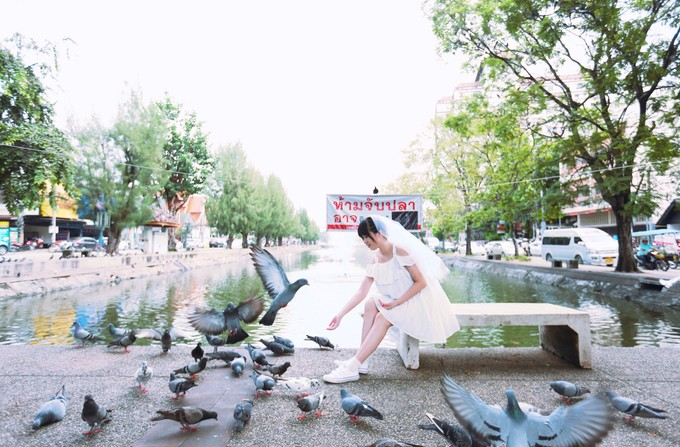
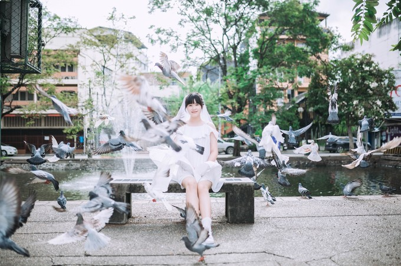
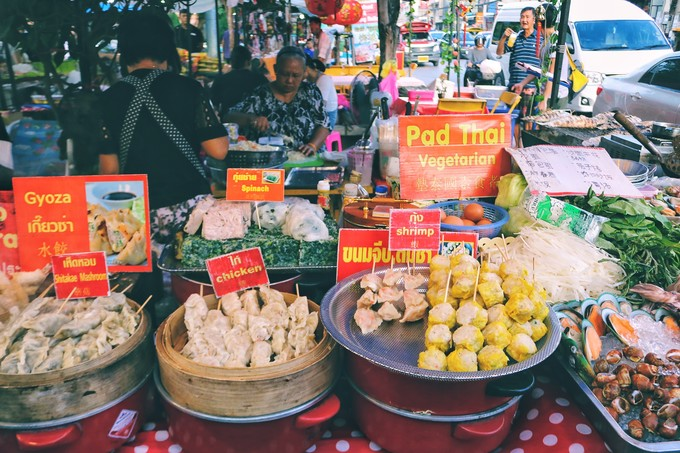
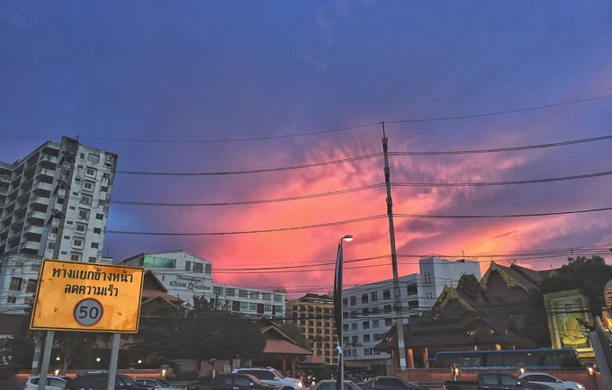
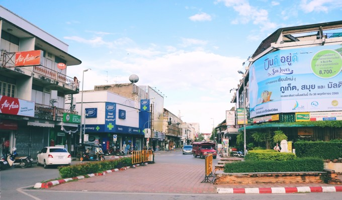
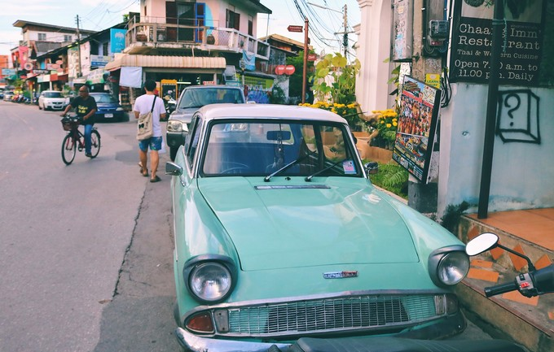
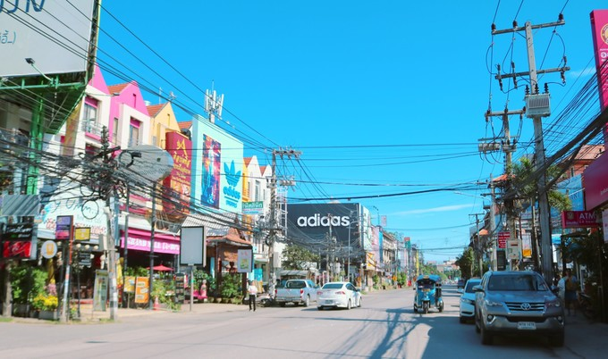
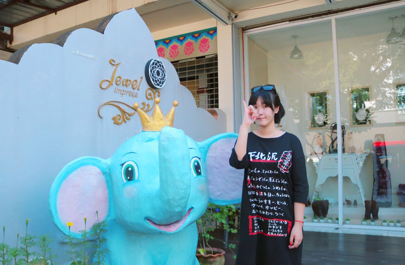
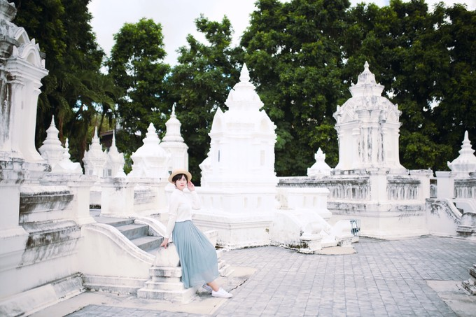
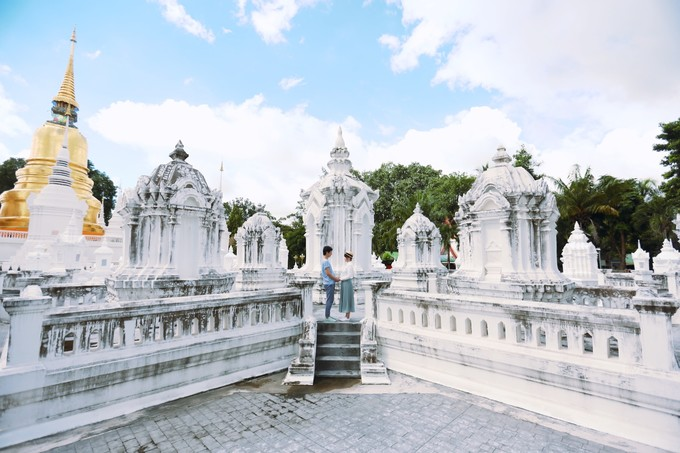

你是我的欢喜❤️ （清迈－拜县慢游记 内附攻略）
Chapter One：一夜一市 一城一故事
2017年10月1日，迎来了最长国庆假期，天气也微微转凉，跟老王结婚一年了，一直想在旅拍中尝试轻婚纱，清迈塔佩门成群的鸽子和古老的城墙，非常适合拍摄。


傍晚的清迈更美了 清迈的周六周日夜市非常有名 长长的街道摆满了小摊儿 冰箱贴、精油皂、木雕 各种伴手礼让你眼花缭乱 考验脚力和肠胃承受力的时候到了 撸起袖子加油干！

在清迈还有一个特殊的现象，在夜市闲逛时，奏起了泰国国歌，所有的行人都停止了动作，庄严站立，那一刻，仿佛时间静止，一直到国歌奏毕，夜市才恢复了喧嚣，一个小小的细节直接体现了这个民族的忠诚。
Chapter Two：何不探索 发现小惊喜
清迈是一个适合慢下脚步闲逛的地方 沿着主干道 不断探索分支小路 别有情趣


下午天开始放晴 阳光热辣辣 清迈古城里有多彩的涂鸦墙 还有许多安静的小路 要靠细心发现

Chapter Three：古城以西 文艺小清新
宁曼路位于古城以西，这算是一条商业街。在这里点一杯早茶，看着陆陆续续打开的店铺，安静的街道来往的人群逐渐增多，也不失为一种闲情逸致。


Chapter Four: 日照古寺
清迈寺庙特别多 虽好多说不上名字 但是不愧称得上一步一庙宇了 见清迈人对宗教信仰的虔诚 松德寺位于古城西边的素贴路 也是有名的寺庙之一


关于光线和拍摄
这次预定了半日旅拍 其余都是自己拍摄的 相机型号为佳能d750 标头加小痰盂（迟迟没舍得剁手换装备）
想给大家梳理一下部分景点顺光逆光的情况 逆光考验技术了 所以大家还是尽量在顺光的时候安排去下面这些景点吧
1、塔佩门 城墙正面上午顺光 城内逆光
2、松德寺 上午顺光 但傍晚光线也很棒
3、倒立小屋、粉色房子上午顺光
4、黄色小屋、大树秋千、二战桥、草莓园下午顺光